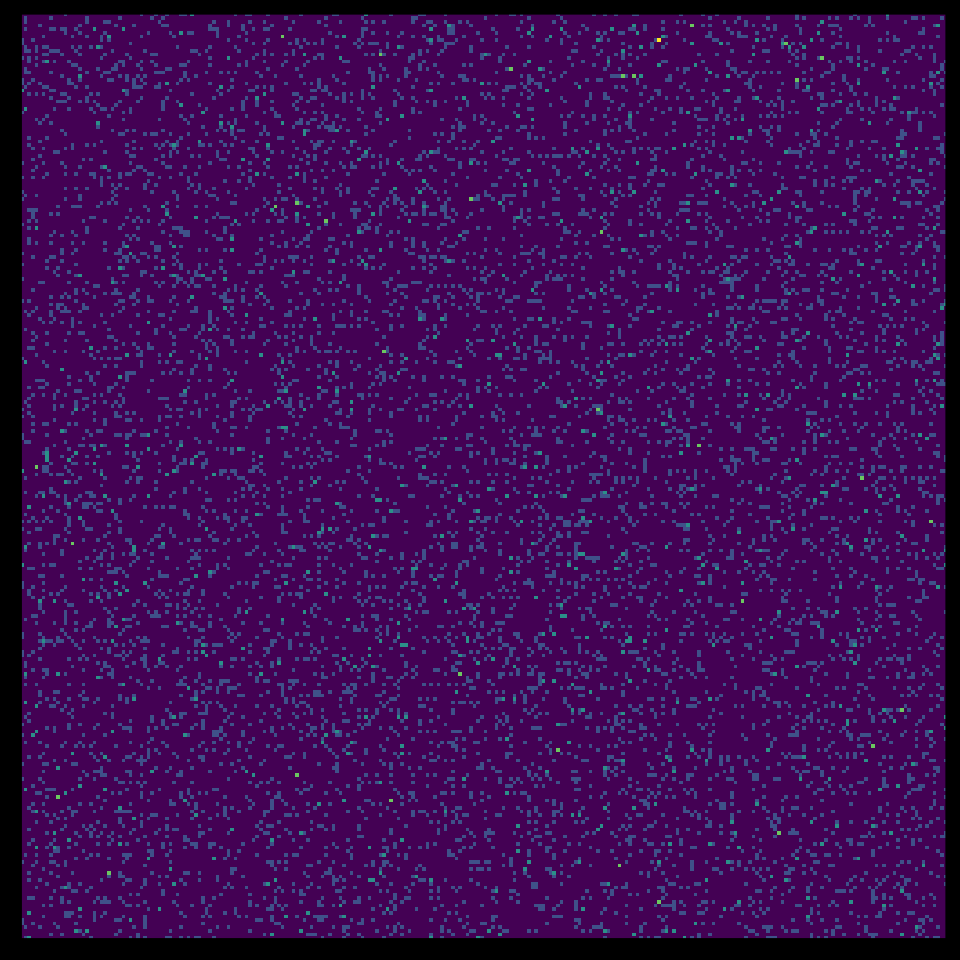

The ggip package provides data visualization of IP addresses and networks. It achieves this by mapping one-dimensional IP data onto a two-dimensional grid.
This introductory vignette gives a quickstart guide on how to use ggip functions to generate plots.
Configuring the coordinate system
The central component of any ggip plot is the coordinate system, as specified by coord_ip(). It determines exactly how IP data is mapped to the 2D grid, and ensures this mapping is applied consistently across all plotted layers.
The coord_ip() function must be called once per plot, and takes arguments:
| Argument | Description |
|---|---|
canvas_network |
The region of IP space visualized by the entire 2D grid. By default, the entire IPv4 space is visualized. This argument allows you to zoom into a region of IP space or to visualize IPv6 space. |
pixel_prefix |
The network prefix length corresponding to a pixel in the 2D grid. Increasing this argument effectively improves the resolution of the plot. |
curve |
The path taken across the 2D grid while mapping IP data. |
More details about this mapping are found in vignette("visualizing-ip-data").
Internal data transformation
Behind the scenes, ggip searches the plotted data sets for any columns that are ip_address() or ip_network() vectors. For each matching column, it replaces the vector with a data frame containing both the original IP data and the mapped Cartesian coordinates. This means the plotted data set now contains a nested data frame column.
As an example, consider a data set featuring two columns. The label column is a character vector and the address column is an ip_address() vector.
#> # A tibble: 3 × 2
#> label address
#> <chr> <ip_addr>
#> 1 A 0.0.0.0
#> 2 B 192.168.0.1
#> 3 C 255.255.255.255This data set is transformed such that the address column is now a data frame. It contains an ip column with the original ip_address() vector, and x and y columns with the Cartesian coordinates on the 2D grid.
#> # A tibble: 3 × 2
#> label address$ip $x $y
#> <chr> <ip_addr> <int> <int>
#> 1 A 0.0.0.0 0 255
#> 2 B 192.168.0.1 214 142
#> 3 C 255.255.255.255 255 255These transformed data frame columns are available when specifying aesthetics. The nested columns can be accessed using the usual $ syntax (see examples below).
Using layers from ggplot2 and other packages
Layers from ggplot2 and other external packages don’t know about the internal data transformation used by ggip. For this reason, these layers expect their positional aesthetics (e.g. x and y) to be specified explicitly. Fortunately, we can extract the Cartesian coordinates from our data frame columns using the $ syntax.
As an example, we plot an ip_address() vector as points accompanied by labels. Note that we’ve specified the x, y and label aesthetics at the top level of the plot, and then the geom_point() and geom_label() layers have picked them up later.
tibble(address = ip_address(c("0.0.0.0", "128.0.0.0", "192.168.0.1"))) %>%
ggplot(aes(x = address$x, y = address$y, label = address$ip)) +
geom_point() +
geom_label(nudge_x = c(10, 0, -10), nudge_y = -10) +
coord_ip(expand = TRUE) +
theme_ip_light()
Similarly, we plot ip_network() vectors using layers corresponding to rectangles.
iana_ipv4 %>%
ggplot(aes(xmin = network$xmin, ymin = network$ymin, xmax = network$xmax, ymax = network$ymax)) +
geom_rect(aes(fill = allocation)) +
scale_fill_brewer(palette = "Accent", name = NULL) +
coord_ip() +
theme_ip_dark()
Note: There are small gaps between the rectangles because networks are mapped onto a 2D grid (i.e. discrete), whereas ggplot2 visualizes the continuous 2D plane. This can be resolved by adding/subtracting 0.5 to the positional aesthetics. However, this gap is often helpful to distinguish networks.
Using ggip layers
Layers from ggip do know about the internal data transformation, so they take an ip aesthetic corresponding to the data frame column. They can then automatically extract the relevant positional information. This is easier because the name of the data frame column is also the name of the original ip_address() or ip_network() column in the input data set.
As an example, we plot a heatmap of an ip_address() vector.
tibble(address = sample_ipv4(10000)) %>%
ggplot(aes(ip = address)) +
stat_summary_address() +
scale_fill_viridis_c(guide = "none") +
coord_ip() +
theme_ip_dark()